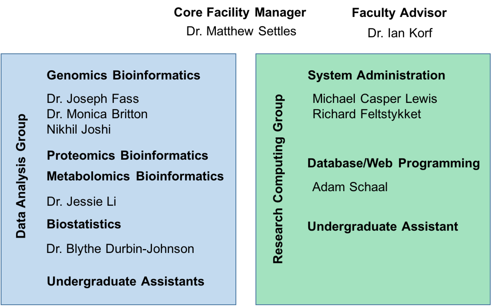

Quick Introduction to the Workshop and Core
The mission of the Bioinformatics Core facility is to facilitate outstanding omics-scale research through these activities:

Staff

Contacts
- Bioinformatics related questions, include but not limited to bioinformatic methods questions, software use, data questions.
- Bioinformatics.core@ucdavis.edu
- Computing Issues, include but not limited to user account questions, equipment failure/malfunction, software install, software failures (not related to use)
- helpdesk@genomecenter.ucdavis.edu
- Training courses information
- training.bioinformatics@ucdavis.edu
Workshop Goals
- End to End understanding of RNAseq differential
- Discussions/lectures
- Technologies
- Experimental design
- Cost estimation
- Workflow
- mRNA gene expression analysis
- To work through a complete experiment, starting from raw data to completion, including making a few figures.
- Goal is 30-40% lecture/discussion 60-70% hands-on
Internet
You will need to access the UCD wireless via your laptop to participate in the hands-on exercises.
Eduroam
Many academic institutions are part of Eduroam. (See “List of Institutions” under “Members” at https://www.eduroam.us/ to find out if your institution is a member.) Please make sure you can log into Eduroam with your device at your home institution, which will make things easier once you come to UCD.
UCD Guest wireless
You will need to access the UCD wireless via your laptop to participate in the hands-on exercises. Please review http://itcatalog.ucdavis.edu/service/wireless-guest-access for access instructions.
Workshop Materials
Workshop materials are all posted on github, and publicly available
http://bioinformatics.ucdavis.edu/training/events/
-
Github main page:
https://github.com/ucdavis-bioinformatics-training
-
This RNAseq Workshop
https://ucdavis-bioinformatics-training.github.io/2019_August_UCD_mRNAseq_Workshop/
https://github.com/ucdavis-bioinformatics-training/2019_August_UCD_mRNAseq_Workshop
Computing Cluster
Course will be conducted on our servers and compute cluster .
tadpole.genomecenter.ucdavis.edu
Everyone should get an account.
https://computing.genomecenter.ucdavis.edu
Request an account -> sponsor “Bioinformatics Core Workshop”
If you already have an account on our systems, then please tell us your username.
Cluster usage will be under the slurm reservation ‘workshop’
Reservation will last 1 full week after the workshop and allow you to practice or run analyze your own data.
workshop ACTIVE 2019-08-19T00:00:00 2019-08-31T00:00:00 12-00:00:00 rafter-[0,2,8,14,18]